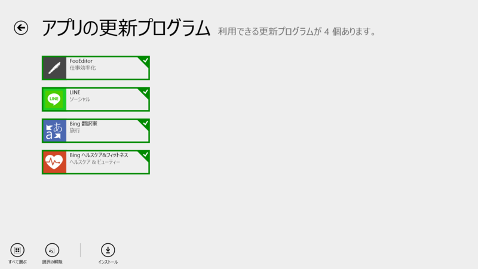
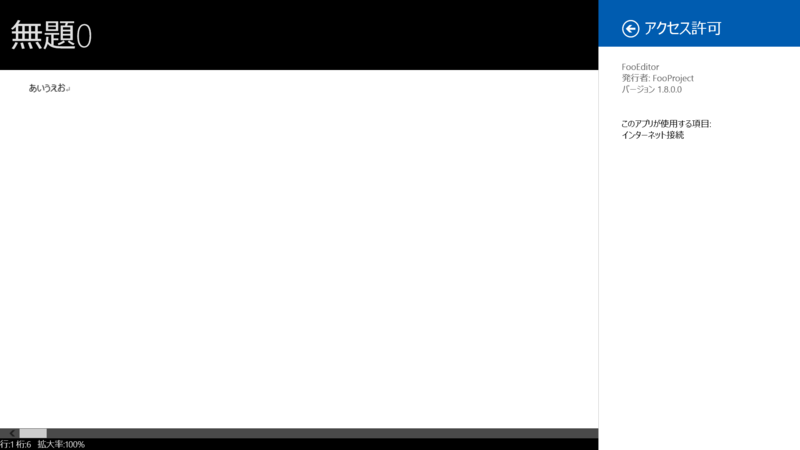
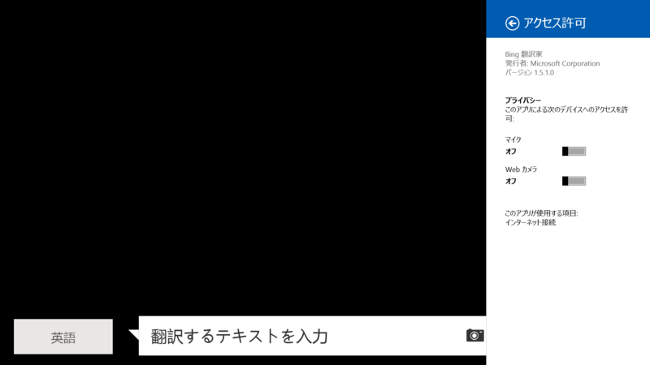
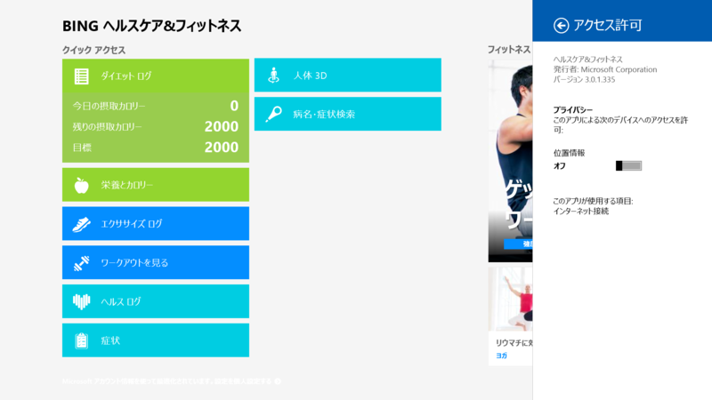

FooEditor 1.8.0.0、LINE 1.0.8.89、Bing 翻訳家 1.5.1.0、Bing ヘルスケア&フィットネス 3.0.1.335
公開日：

FooEditor 1.6.0.0 → 1.8.0.0

1.8.0.0
[BugFix]
・特定の操作をするとIMEで入力ができなくなることがある不具合を修正した
Bing 翻訳家 1.5.0.0 → 1.5.1.0

更新履歴なし。
それにしてもこのアプリ名はイケてない……翻訳アプリなのに！！
Bing ヘルスケア&フィットネス 3.0.1.203 → 3.0.1.335

更新履歴なし。
プリインストールのいわゆる“Bing アプリ”の一つになるのだろうか。